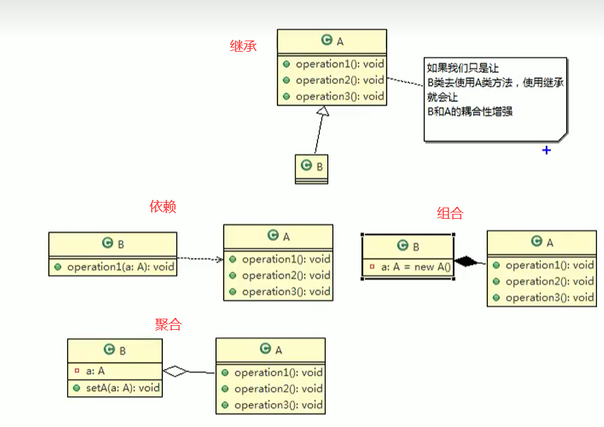

设计模式（Design pattern）是软件开发人员在软件开发过程中面临的一般问题的解决方案。这些解决方案是众多软件开发人员经过相当长的一段时间的试验和错误总结出来的。
设计模式的七大原则
开闭原则
开闭原则 (Open Closed Principle) : 对扩展开放（对提供方），对修改关闭（对使用者方）。
用抽象构建框架，用实现扩展细节。
在程序需要扩展时，不去修改原有的代码，而是通过扩展实体的行为来是实现变化。
开闭原则可以提高复用性、维护性。
示例
1 2 3 4 5 6 7 8 9 10 11 12 13 14 15 16 17 18 19 20 21 22 23 24 25 26 27 28 29 30 31 32 33 34 35 36 37 38 39 40 41 42 43 44 45 46 47 48 49 50 public class Instance public static void main (String[] args) GraphicEditor graphicEditor = new GraphicEditor(); graphicEditor.drawShape(new Rectangle()); graphicEditor.drawShape(new Circle()); } } class GraphicEditor public void drawShape (Shape s) if (s.type == 1 ) { drawRectangle(s); } else if (s.type == 2 ) { drawCircle(s); } } private void drawRectangle (Shape r) System.out.println("绘制矩形" ); } private void drawCircle (Shape c) System.out.println("绘制圆形" ); } } class Shape int type; } class Rectangle extends Shape Rectangle() { super .type = 1 ; } } class Circle extends Shape Circle() { super .type = 2 ; } }
改进方案
1 2 3 4 5 6 7 8 9 10 11 12 13 14 15 16 17 18 19 20 21 22 23 24 25 26 27 28 29 30 31 32 33 34 35 36 37 38 39 40 41 42 43 44 45 46 47 48 49 50 51 52 public class Instance public static void main (String[] args) GraphicEditor graphicEditor = new GraphicEditor(); graphicEditor.drawShape(new Rectangle()); graphicEditor.drawShape(new Circle()); graphicEditor.drawShape(new Triangle()); } } class GraphicEditor public void drawShape (Shape s) s.draw(); } } abstract class Shape int type; abstract void draw () } class Rectangle extends Shape Rectangle() { super .type = 1 ; } public void draw () System.out.println("绘制矩形" ); } } class Circle extends Shape Circle() { super .type = 2 ; } public void draw () System.out.println("绘制圆形" ); } } class Triangle extends Shape Triangle() { super .type = 3 ; } public void draw () System.out.println("绘制三角形" ); } }
单一职责原则
对类来说，一个类应该只负责一个职责。如果类 A 负责两个不同职责：职责 1，职责 2。当因职责 1 的需求改变而改变 A 时，可能造成职责 2 执行错误。此时则需要将 A 的粒度分解为 A1，A2。
目的：
降低类的复杂度，提高类的可读性、可维护性。
降低变更引起的风险。
当类中的方法数量足够少，逻辑足够简单时，可以在方法级别保持单一职责原则。
接口隔离原则
接口隔离原则 (Interface Segregation Principle) ：使用多个隔离的接口，比使用单个接口好，降低类之间的耦合度。客户端不应该依赖它不需要的接口，一个类对另一个类的依赖应该建立在最小的接口上。
示例
1 2 3 4 5 6 7 public interface InterfaceTest void operation1 () void operation2 () void operation3 () void operation4 () void operation5 () }
1 2 3 4 5 6 7 8 9 10 11 12 13 14 15 16 17 18 19 public class InterfaceSegregationPrinciple_1 public static void main (String[] args) A a = new A(); a.depend1(new B()); a.depend2(new B()); a.depend3(new B()); C c = new C(); c.depend1(new D()); c.depend4(new D()); c.depend5(new D()); } }
1 2 3 4 5 6 7 8 9 10 11 12 13 14 15 16 17 class B implements InterfaceTest public void operation1 () System.out.println("B 实现了接口 InterfaceTest 的方法 operation1" ); } public void operation2 () ...... } public void operation3 () ...... } public void operation4 () ...... } public void operation5 () ...... } }
1 2 3 4 5 6 7 8 9 10 11 12 13 14 15 16 17 class D implements InterfaceTest public void operation1 () System.out.println("D 实现了接口 InterfaceTest 的方法 operation1" ); } public void operation2 () ...... } public void operation3 () ...... } public void operation4 () ...... } public void operation5 () ...... } }
1 2 3 4 5 6 7 8 9 10 11 class A public void depend1 (InterfaceTest i) i.operation1(); } public void depend2 (InterfaceTest i) i.operation2(); } public void depend3 (InterfaceTest i) i.operation3(); } }
1 2 3 4 5 6 7 8 9 10 11 class C public void depend1 (InterfaceTest i) i.operation1(); } public void depend4 (InterfaceTest i) i.operation4(); } public void depend5 (InterfaceTest i) i.operation5(); } }
改进
1 2 3 4 5 6 7 8 9 10 11 12 13 14 15 16 interface Interface_1 void operation1 () } interface Interface_2 void operation2 () void operation3 () } interface Interface_3 void operation4 () void operation5 () }
依赖倒转原则
依赖倒转原则 (Dependence Inversion Principle) : 针对接口编程，依赖于抽象而不依赖于具体。
高层模块不应该依赖低层模块，二者都应该依赖其抽象。
抽象不应该依赖细节，细节应该依赖抽象。
依赖倒转原则是基于这样的设计理念：相对于细节的多变性，抽象的东西要稳定的多。以抽象为基础搭建的架构比以细节为基础的架构要稳定的多。在java中， 抽象指的是接口或抽象类，细节就是具体的实现类。
使用接口或抽象类的目的是制定好规范，而不涉及任何具体的操作，把展现细节的任务交给他们的实现类去完成。
示例
1 2 3 4 5 6 7 8 9 10 11 12 13 14 15 16 17 18 19 20 21 22 23 24 25 26 27 28 29 30 31 public class Instance public static void main (String[] args) Person person = new Person(); person.receive(new Email()); person.receive(new Wechat()); } } class Email public String getInfo () return "邮件消息" ; } } class Wechat public String getInfo () return "微信消息" ; } } class Person public void receiveEmail (Email email) System.out.println(email.getInfo()); } public void receiveWechat (Wechat wechat) System.out.println(wechat.getInfo()); } }
改进方案
设计接收器接口 IReceiver，聊天工具类 Email 和 Wechat 实现该接口。
在扩展时，只需要添加 聊天工具类，并让该类实现 IReceiver 接口就可以。
1 2 3 4 5 6 7 8 9 10 11 12 13 14 15 16 17 18 19 20 21 22 23 24 25 26 27 28 29 30 31 public class Instance public static void main (String[] args) Person person = new Person(); person.receive(new Email()); person.receive(new Wechat()); } } interface IReceiver String getInfo () ; } class Email implements IReceiver @Override public String getInfo () return "邮件消息" ; } } class Wechat implements IReceiver @Override public String getInfo () return "微信消息" ; } } class Person public void receive (IReceiver receiver) System.out.println(receiver.getInfo()); } }
依赖关系传递的三种方式及应用案例
1 2 3 4 5 6 7 8 9 10 11 12 13 14 15 16 17 public class DependenceInversion public static void main (String[] args) ChangHong changHong = new ChangHong(); OpenAndClose openAndClose = new OpenAndClose(); openAndClose.open(changHong); OpenAndClose openAndClose = new OpenAndClose(changHong); openAndClose.open(); OpenAndClose openAndClose = new OpenAndClose(); openAndClose.setterITV(changHong); openAndClose.open(); } }
接口传递
1 2 3 4 5 6 7 8 9 10 11 12 13 14 15 16 17 18 19 20 21 interface IOPenAndClose void open (ITV tv) } interface ITV void play () } class OpenAndClose implements IOPenAndClose @Override public void open (ITV tv) tv.play(); } } class ChangHong implements ITV @Override public void play () System.out.println("长虹电视打开。。。" ); } }
构造方法传递
1 2 3 4 5 6 7 8 9 10 11 12 13 14 15 16 17 18 19 20 21 22 23 24 25 26 27 interface IOPenAndClose void open () } interface ITV void play () } class OpenAndClose implements IOPenAndClose public ITV tv; public OpenAndClose (ITV tv) this .tv = tv; } @Override public void open () tv.play(); } } class ChangHong implements ITV @Override public void play () System.out.println("长虹电视打开。。。" ); } }
setter方法传递
1 2 3 4 5 6 7 8 9 10 11 12 13 14 15 16 17 18 19 20 21 22 23 24 25 26 27 28 29 interface IOPenAndClose void open () void setterITV (ITV tv) } interface ITV void play () } class OpenAndClose implements IOPenAndClose private ITV tv; @Override public void open () tv.play(); } @Override public void setterITV (ITV tv) this .tv = tv; } } class ChangHong implements ITV @Override public void play () System.out.println("长虹电视打开。。。" ); } }
依赖倒置原则的实现方法
依赖倒置原则的目的是通过要面向接口的编程来降低类间的耦合性，所以我们在实际编程中只要遵循以下4点，就能在项目中满足这个规则。
每个类尽量提供接口或抽象类，或者两者都具备。
变量的声明类型尽量是接口或者是抽象类。
任何类都不应该从具体类派生。
使用继承时尽量遵循里氏替换原则。
里氏替换原则
里氏替换原则 (Liskov Substitution Principle) : 任何基类可以出现的地方，子类一定可以出现。
LSP 是继承复用的基石，只有当派生类可以替换掉基类，且软件单位的功能不受到影响时，基类才能真正被复用，而派生类也可以在基类的基础上增加新的行为。
子类应尽量不重写父类的方法。
如果基类 A 中的某一个方法，其多数子类都需要重写。则应设计一个更基础的抽象类 / 接口 S，使 A 和其子类去 继承/实现 S。
继承增强了两个类的耦合性，在适当情况下，可以通过聚合、组合或依赖解决问题。
迪米特法则
迪米特法则 (Demeter Principle) : 又称最少知道原则。一个实体应当尽量少的与其他实体之间发生相互作用。
一个类对自己依赖的类知道的越少越好。对于被依赖的类不管多复杂，都尽量的将逻辑封装在类的内部。对外除了 public 方法，不泄露任何信息。
迪米特法则的另一个定义：只与直接的朋友通信。
直接朋友关系：每个对象都会与其他对象有耦合关系，只要两个对象之间有耦合关系，就说这两个对象之间是朋友关系。耦合的方式很多，依赖、关联、组合、聚合等。其中，我们称出现成员变量、方法参数、方法返回值中的类为直接朋友，而出现在局部变量中的类不是直接的朋友。也就是说，陌生的类最好不要以局部变量的形式出现在类的内部。
合成复用原则
尽量使用合成 / 聚合的方式，而不是使用继承。

总结
单一职责原则告诉我们实现类要职责单一
里氏替换原则告诉我们不要破坏继承体系
依赖倒置原则告诉我们要面向接口编程
接口隔离原则告诉我们在设计接口的时候要精简单一
迪米特原则告诉我们要降低耦合
开闭原则是总纲，告诉我们要对扩展开放，对修改关闭
设计模式分类
类型
名称
介绍
创建型模式这些设计模式提供了一种在创建对象的同时隐藏创建逻辑的方式，而不是使用 new 运算符直接实例化对象。这使得程序在判断针对某个给定实例需要创建哪些对象时更加灵活。
单例模式
采取一定的方法，保证整个软件系统中，对某个类只能存在一个实例对象，并且该类只提供一个取得其实例对象的方法（静态方法）
抽象工厂模式
原型模式
建造者模式
工厂模式
结构型模式这些设计模式关注类和对象的组合。继承的概念被用来组合接口和定义组合对象获得新功能的方式。
适配器模式
桥接模式
装饰模式
组合模式
外观模式
享元模式
代理模式
行为型模式这些设计模式特别关注对象之间的通信。
模板模式
命令模式
观察者模式
中介者模式
访问者模式
迭代器模式
备忘录模式
解释器模式
状态模式
策略模式
责任链模式
单例模式
饿汉式
构造器私有化（防止 new）
类的内部创建对象
向外暴露一个静态的公共方法
1 2 3 4 5 6 7 8 9 10 11 12 13 14 15 16 17 18 19 20 21 22 23 public class Singleton private static final Singleton instance = new Singleton(); private Singleton () public static Singleton getInstance () return instance; } }
1 2 3 4 5 6 7 8 9 10 11 12 public class Singleton private static Singleton instance; static { instance = new Singleton(); } private Singleton () public static Singleton getInstance () return instance; } }
懒汉式
1 2 3 4 5 6 7 8 9 10 11 12 13 14 public class Singleton private static Singleton instance; private Singleton () public static Singleton getInstance () if (instance == null ) { instance = new Singleton(); } return instance; } }
1 2 3 4 5 6 7 8 9 10 11 12 13 14 public class Singleton private static Singleton instance; private Singleton () public static synchronized Singleton getInstance () if (instance == null ) { instance = new Singleton(); } return instance; } }
双重检查
线程安全，有 lazy loading 效果，效率高。
1 2 3 4 5 6 7 8 9 10 11 12 13 14 15 16 17 public class Singleton private static volatile Singleton instance; private Singleton () } public static Singleton getInstance () if (instance == null ) { synchronized (Singleton.class) { if (instance == null ) { instance = new Singleton(); } } } return instance; } }
静态内部类
线程安全，有 lazy loading 效果，效率高。
采用类加载的机制，保证初始化实例时只有一个线程。
静态内部类方式在 Singleton 类被加载时并不会立即实例化，而是在需要实例化时，调用 getInstance() 方法，才会加载 SingletonInstance 类，从而完成 Singleton 的实例化。
类的静态属性只会在第一次加载类的时候初始化，所以，该方法保证了线程的安全性，在类进行初始化是，别的线程是无法进入的。
1 2 3 4 5 6 7 8 9 10 11 12 public class Singleton private Singleton () } private static class SingletonInstance private static final Singleton INSTANCE = new Singleton(); } public static Singleton getInstance () return SingletonInstance.INSTANCE; } }
枚举
1 2 3 4 5 6 7 8 9 10 11 12 13 14 15 public class Main public static void main (String[] args) Singleton instance1 = Singleton.INSTANCE; Singleton instance2 = Singleton.INSTANCE; System.out.println(instance1 == instance2); } } enum Singleton INSTANCE； public void method () …… } }
推荐使用：饿汉式、双重检查、静态内部类和枚举的方式。
观察者模式
对象之间是 一对多关系 的一种设计方案，1 为被依赖的对象，作为 Subject，多为Observer，当 Subject 发生变化时，通知所有依赖它的 Observer 并被自动更新。
如果您喜欢此博客或发现它对您有用，则欢迎对此发表评论。 也欢迎您共享此博客，以便更多人可以参与。 如果博客中使用的图像侵犯了您的版权，请与作者联系以将其删除。 谢谢 ！